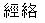
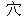

jing luo   Jing luo (meridians) are the channels in the body through which the qi flows. Xue (acupuncture points) are the points on the surface of the skin that connect to the jing luo (meridians). Meridians and acupuncture points are bad translations since jing luo are physically real but meridians are imaginary lines of the earth; and xue are just points on the skin that can transfer signals into the jing luo (meridian) and are not necessary only used for acupuncture. Research on jing luo was done by Shanghai Fu Dan University, Shanghai Bao Shan Acupuncture Hospital, Shanghai Sixth People Hospital, Second Army Medical School, and Shanghai Chinese Medical School. MRIs (Magnetic Resonance Imaging), CAT scans (computer axial topography scans), and autopsies were used in the research. The discoveries on the characteristics of meridian (jing luo) are : 1. Jing luo and xue (acupuncture points) are basically complex structures, aggregates of connective tissues, lymph ducts, blood vessels and nerves that possess complex biological functions. 2. The connective tissues deep under the xue (acupuncture points) contain larger amount of the elements like calcium, phosphorus, potassium, iron, zinc, manganese, chromium than other tissues. Among them, the amount of calcium is proportionally higher than in any other tissues except bones, about 10 to 100 times higher. Calcium ions are important messengers in the regulating the functions of the body. 3. The collagens in the connective tissue of jing luo and xue are highly efficient in transmitting infrared signals. This suggests that the human body may possess an optical system that controls the functions of the body. |
|